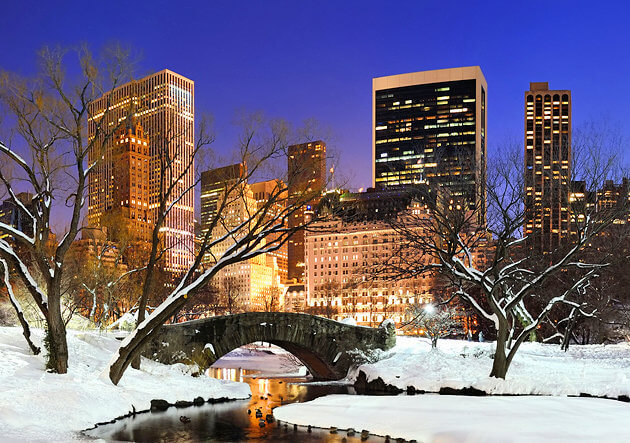

{kind=link}
{kind=link}
{kind=link}
{kind=link}
{kind=link}
{kind=link}
{kind=link}
{kind=link}
Recommended places new york
- Statue of Liberty and Battery Park
The Statue of Liberty was France's gift to America. It was built in 1886 and remains a famous world symbol of freedom and one of the greatest American icons. It is the world's largest statue and stands just less than 152 feet tall from the base to the torch, and weighs approximately 450,000 pounds. The statue offers a fine view of the New York Harbor and lower Manhattan. - Empire State Building

Along with the Statue of Liberty, The Empire State Building is New York's most famous landmark. The 381 m tall, 102-storey building was the tallest in the world until the 1 World Trade Center tower rose higher 41 years later. Topped with a mooring mast for airships, the Empire State Building immediately became a landmark and a symbol for NYC when it opened in 1931. There are actually two observatories atop the Empire State Building. - Central Park

Central Park is the playground of New Yorker's. This huge park in the city center is one of the things that makes New York such a beautiful city and not simply a concrete jungle. The park has many attractions within its borders and has been featured in countless TV shows and movies. Some of the places of note within this green space that visitors will probably be familiar with are Strawberry Fields.
- Broadway and Shubert Alley
Taking in a Broadway show is one of the highlights of a visit to New York City. Considered the pinnacle of American theater, it has long been world renowned for its performances. This is the place to come to see the latest shows and the long running classics. Broadway usually refers simply to Broadway theater which encompasses a large number of theater venues in the theatre district and along the street of Broadway.
Official site:http://www.broadway.com/ - Metropolitan Museum of Art
The Metropolitan Museum of Art, or "The Met" as it is commonly known, was founded in 1870.The permanent collection at the Met contains over 2 million works of art. Highlights of the collection include American decorative arts, arms and armor, costumes, Egyptian art, musical instruments, and photographs, along with much more.
Official site:http://www.metmuseum.org/ - Rockefeller Center
Rockefeller Center is a vast entertainment and shopping complex in the middle of Manhattan, and home to NBC-TV and radio and other media. There is an outdoor skating rink which is incredibly popular in winter. At Christmas a huge tree stands out front. Inside are shops, restaurants, and an observation deck. In front of the International Building is a famous sculpture of Atlas.
- Fifth Avenue
Fifth Avenue has long had a reputation as New York's premier shopping area. Many top end designers have their flagship stores located along this famous avenue. Cartier, Tiffany, Bergdorf-Goodman, the famous Apple Store Fifth Avenue, and of course Saks Fifth Avenue, as well as many others line the posh avenue. Even none shoppers can enjoy a walk along Fifth Avenue. - Brooklyn Bridge
The Brooklyn Bridge, completed in 1883, was the world's first bridge to be constructed of steel. It spans the East River from Manhattan. The bridge is an American landmark that has inspired generations of poets, songwriters and painters. Engineer John Roebling conceived of the bridge in 1855 and worked out every detail from its two granite towers to its four suspended steel cables. - Times Square
Formerly Longacre Square, Times Square was named in 1904 after the New York Times tower. The newspaper first posted current headlines along its famous moving sign, the world's first, in 1928. Long the heart of the Theater District, Times Square fell into decay during the Depression when many theaters shut down. The city cleaned up the area by inviting corporations such as Disney to move into the area. Address: Broadway and 7th Avenue Official site:http://www.timessquarenyc.org/index.aspx